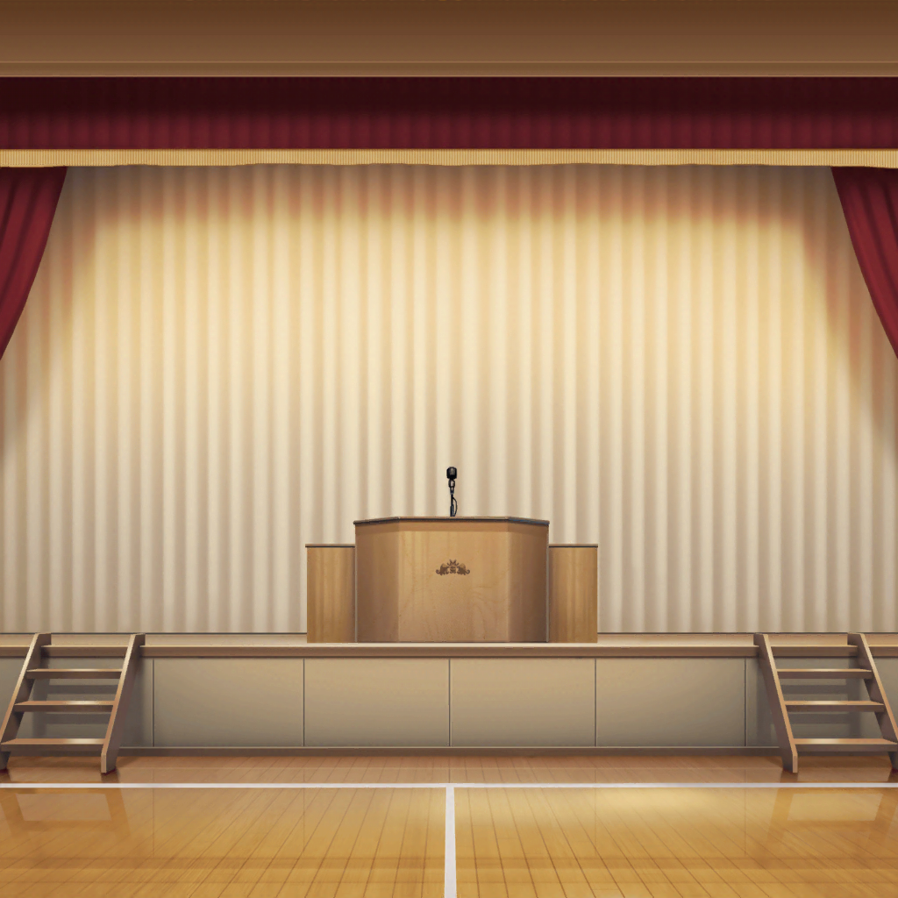

羽丘女子学園 体育館ステージ
麻弥
えーっと、このセリフのあと、千聖さんがこの位置にきて……
１，２，３……のリズムで照明を……
千聖
麻弥ちゃん？ 何してるの？
麻弥
それから、４５度の角度に……
千聖
麻弥ちゃん！
麻弥
ほああっ！？ ……はっ、千聖さん！
いつからそこに？
千聖
３０秒くらい前かしら？ 何をしてたの？
麻弥
台本を見ながら、照明のシミュレーションをしてたんです
千聖
台本、真っ黒になってる。
これ、全部麻弥ちゃんの書き込み？
麻弥
はい、ジブンのメモです。
稽古のたびにメモが増えていって、こんなことに……
麻弥
たまに自分でもなんて書いてあるのか
わからないことがあったりするんですけどね、あはは
千聖
確かにこれだけ書き込んでいれば、
昔書いたメモは読めなくなりそうね。
例えばどんなことをメモしているの？
麻弥
あ、台本見ますか？
読めないかもしれないですけど……
千聖
『セリフ後、３秒後に４５度の角度にあてる』、
『ジュリエットが２歩歩いてからあてる』……
かなり細かくメモしているのね
麻弥
あはは……間違わないように、安心できる材料がほしいんですよ。
それでこんな風にメモがいっぱい……
千聖
役者の歩数までしっかり見ているなんて、すごいわ
麻弥
照明は少しズレただけでもかなり印象が変わりますからね。
これも、演者さんの演技をよりよく見せるためです！
千聖
さすが麻弥ちゃんね。
私も、なるべく立ち位置からズレないように注意するわ
麻弥
千聖さんは、もともと立ち位置からほとんどズレない方ですから。
いつも正確ですよね
千聖
そう？ それならよかった
麻弥
……薫さんは、すごいですから。自由で
千聖
薫はよく言えば、そういう決まりごとにとらわれないものね。
表現者にとってそういう精神は大事だと思う
千聖
……まわりに迷惑をかけなければね
麻弥
あはは……千聖さん、薫さんとのシーンが多いですもんね
千聖
そうなの。まったく、立ち位置について、
何度言ってもきかないのよね。
……そうだ。麻弥ちゃん、薫の台本は見たことある？
麻弥
いえ。ないですね
千聖
どのページ、どんなセリフにも『儚く』と書いてあるの。
私にはなんだかよくわからなかったわ
麻弥
ええ！？ 全部『儚い』ですか！？
千聖
ええ。筆圧の強弱をつけて書いていたから、『儚い』にも
いろいろなニュアンスがあるんでしょうね
麻弥
いろいろな『儚い』ですかあ……
薫さんらしいですね
麻弥
千聖さんは台本にどんな風にメモしてるんですか？
千聖
私はそんなにおもしろいメモはないと思うけど……
薫とのかけあいのシーンには『儚く』と書いているわ。
彼女がそうだから
麻弥
あっはは！ 千聖さんにまで『儚く』と書かせてしまう薫さん、
すごいですね！
千聖
こっちは『儚い』のニュアンスを汲み取るのが
大変だっていうのに……
麻弥
ふふっ。千聖さん、頑張ってくださいっ。
当日も『儚く』お願いしますよ？
千聖
ふふっ。そのつもりよ。お互い、頑張りましょう♪